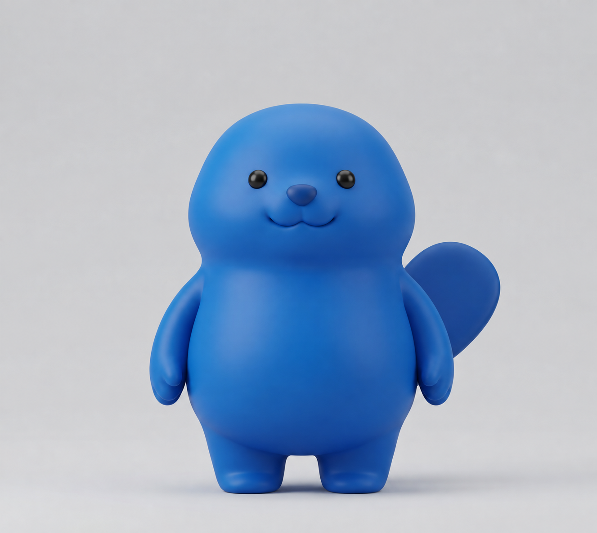

퍼렁이
말랑한 쉼표
☷
YOUR LITTLE SOFT MOMENT
오늘도, 말랑하게.
아무 생각 없이 꾹. 퍼렁이가 곁에 있어요.

조물조물, 마음까지 부드러워져요
꾹 누르고
·
쭉 당기고
·
톡 놓아 보세요
◎
말랑말랑
기분 좋은 조물조물
↟
폴짝!
신나게 뛰어올라요
☺
애교
도리도리, 발그레
MAKE YOURSELF COMFORTABLE
나만의 말랑함
×
손끝의 진동
누를 때도, 착지할 때도 부드럽게
말랑한 소리
작고 포근한 소리로 더 생생하게
차분한 움직임
점프와 흔들림을 작게 줄여요
말랑함
폭신폭신
탱글탱글
폭신폭신
몰랑몰랑
지금의 설정은 이 기기에만 기억해 둘게요.